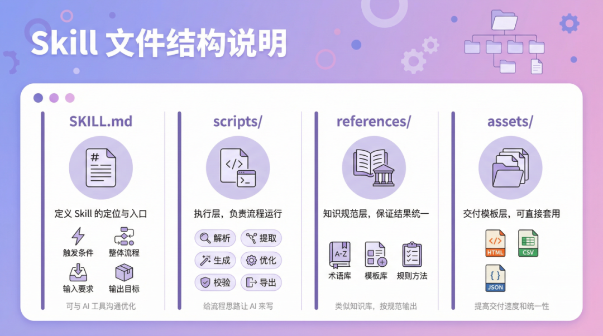
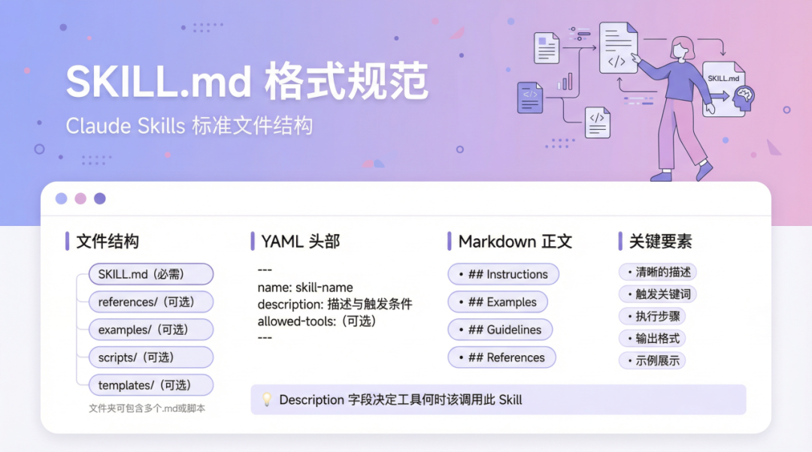
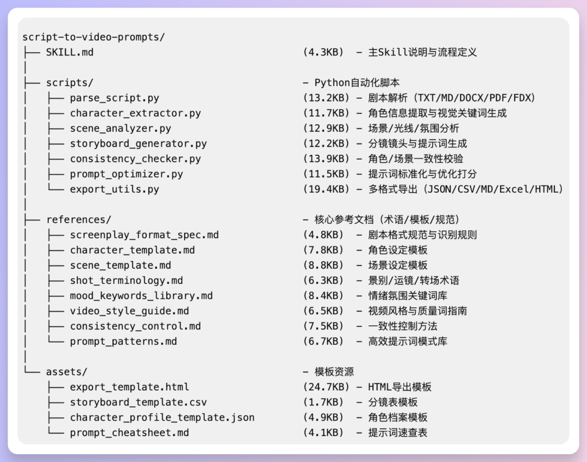
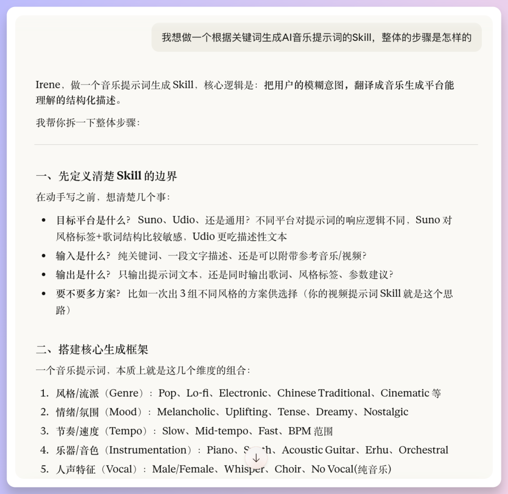
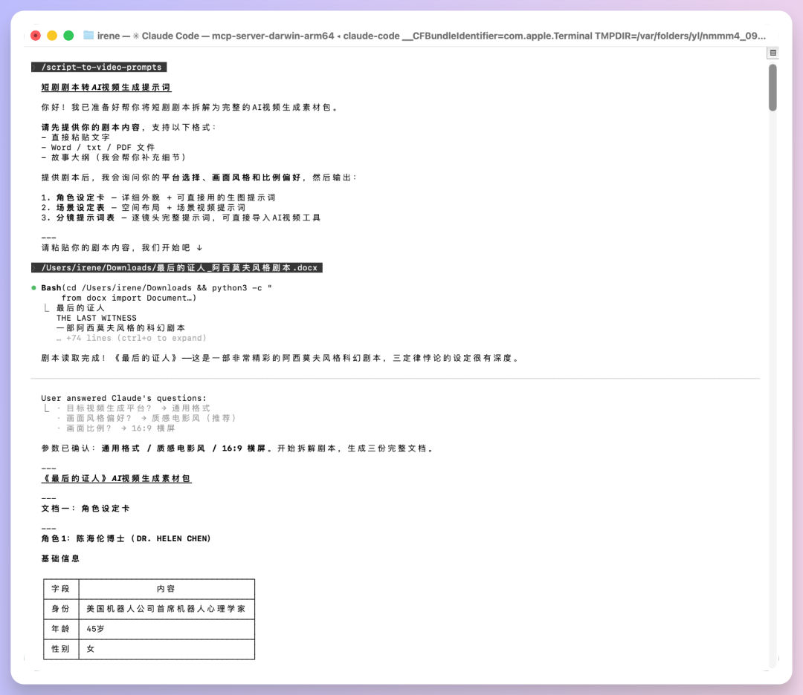

本文以「短剧剧本转视频分镜提示词」Skill 的真实制作过程为蓝本，梳理出一套通用的 Skill 设计与撰写方法论：四层结构、三阶段制作、一份可直接套用的总提示词，以及省 token 的后期修改技巧。
做复杂 Skill 最容易掉进的坑，是一开始就陷入技术细节。正确顺序是：先抓一条主线，再一步步拆分。
把主线定好后，再把中间步骤拆开——例如解析 → 生成 → 检查 → 导出，然后要求统一格式，最后再让 AI 去输出。即便一开始描述得很"粗"，只要方向对，后续让 AI 逐步细化即可。
不用一上来写得很细，可以只告诉 AI："我输入什么，想获得什么输出，中间流程大致是什么，有哪些模板可以调用"，先把骨架搭出来，等跑通了再按需补充。这样不会一开始陷入技术细节，也不容易做着做着偏题。
过程中有任何不清楚的地方，都可以直接问 AI——从大方向到细节都行。AI 往往会写得很详细，我们只需要提取关键要素，不够清晰就让 AI 继续优化提示词，直到逻辑完整。
一份成熟的 Skill 不只是一个 Markdown 文件，而是由"入口 + 执行 + 规范 + 模板"四层协作组成，职责清晰、互不干扰。

定义这个 Skill 做什么、怎么触发、整体流程、输入要求、输出目标。
把流程真正跑起来：解析、提取、生成、优化、导出。负责执行并产出结果。
术语、模板、规则和方法（剧本规范、镜头术语、情绪词库、一致性指南……）。保证结果统一、可解释、可复用。
分镜 CSV、角色提示词模板、HTML 导出模板、速查表等。提高交付速度、统一排版，避免每次从零开始。
职责不同：脚本负责执行并产出结果；参考文档负责解释规则和标准；模板负责规范格式和交付外观。改哪里就动哪里：规则变了只改 references/，逻辑变了只改 scripts/，维护和排错成本都大幅下降。
文件名必须是 SKILL.md（一个 Skill 至少要有一个 SKILL.md 作为入口）。它由YAML 头部 + Markdown 正文 + 关键要素组成。YAML 头部里的 name 和 description 尤其重要——description 里要写清触发词，决定这个 Skill 什么时候被调用。

# YAML 头部示例：把触发场景一股脑写进 description
---
name: script-to-video-prompts
description: 短剧剧本转视频提示词生成器。将用户上传的短剧剧本文档智能拆解为
可直接用于AI视频生成的完整中文提示词体系。输出包括角色设定提示词、
场景设定提示词、逐镜头分镜提示词。支持批量处理、多格式导出、一致性校验。
当用户说"剧本转视频提示词"、"拆解剧本生成分镜"、"短剧转视频"、
"批量生成分镜提示词"、"剧本可视化"时触发。
---制作过程可划分为三个阶段：前期定标准，中期优化功能模块，后期测试优化与封装。虽分步骤，但实际可让 AI 一次性执行，再根据效果迭代。
先确定这个 Skill 的操作主流程。例如：剧本解析 → 角色提取 → 场景分析 → 分镜生成 → 提示词优化 → 一致性检查 → 导出。没有明确指定的话，后面所有实现都默认照此规范。
支持哪些输入（如 txt/md/docx/pdf/fdx）。定义默认输入是什么；同时给出"推荐输入"（如参考图、画幅要求、时长限制），并提示输入不足时效果可能不可控。
写清楚要产出哪些东西：角色设定、场景设定、分镜提示词、一致性报告、导出文件格式等。这一步的作用是防止越做越偏。
关键一步！确定每一步的输入输出长什么样。先定好每个输出项的字段，再让 AI 按此输出，后面就不会乱。例：分镜表按"第 X 幕第 X 场景"组织，每个场景的提示词表包含镜头编号、景别、画面描述、构图、运镜、光线、色调、氛围、时长、镜头角度、提示词。把模板放进 assets/，让所有脚本都读写同一个模板。
先输出规范文档和模板文件放到对应文件夹，再把路径给到后续脚本调用。
这一段的脚本都可以交给 AI 写：
| 模块 | 职责 | 要点 |
|---|---|---|
| 7 · 解析 | 把原始剧本变成结构化数据 | 识别场景标题、角色名、对白、动作、转场 |
| 8 · 角色提取 | 从解析结果提角色档案 | 性别、年龄段、体型、发型、关键词，并给出可直接生图的提示词 |
| 9 · 场景分析 | 提炼场景视觉基础 | 地点、室内外、时间段、光线、氛围，生成基础视觉提示词，作为全片视觉基础 |
| 10 · 分镜生成 | 按场景自动拆镜头 | 至少含建立镜头、角色出场、对话镜头；每镜有编号、景别、运镜、动作、时长、转场、提示词 |
| 11 · 提示词优化 | 统一处理镜头提示词 | 术语标准化、去重复、补质量词（高质量、电影感、清晰对焦等） |
| 12 · 一致性检查 | 交叉比对偏差 | 检查角色跨镜头漂移、场景跳变、光线突变，输出"问题+修复建议+复用规范提示词" |
写法 A（详细版）：
帮我生成脚本，用于把原始剧本内容（支持 txt/md/docx/pdf/fdx）解析成结构化
JSON，要求自动识别并分类：场景标题（INT/EXT 或"第X场/场景X"）、角色名、对白、动作、
转场，并输出中文字段：标题、场景列表、全角色、全地点、总时长秒数、元数据。
每个场景至少包……（补充具体字段）写法 B（极简版，不满意再让 AI 优化）：
生成一个通用剧本解析脚本，能读取常见文本格式并智能分析内容，自动识别场景、角色、
对白、动作和转场，输出清晰的结构化 JSON；要求优先保证稳定可用，即使输入不规范
也能自动补默认场景并正常返回结果。现在的 AI 工具已经足够"机灵"，只要要求它"生成一个独立的脚本"，它大多会自动完成，多数时候不需要单独输入很长的提示词。
确认默认导出格式，建议至少支持 JSON + CSV + Markdown，让不同职能都能直接看和用。
用 2-3 份不同类型的输入（可由 AI 生成或自己提供）跑通全流程。重点检查：字段是否缺失、镜头是否正确、提示词是否符合自己的要求。发现问题就让 AI 只针对对应模块修改。
整理为清晰目录：最简单的可以只一个 SKILL.md，复杂一些就 SKILL.md + scripts/ + references/ + assets/。这一步可直接让 AI 封装，自己再确认目录结构即可。

把上面所有步骤梳理成一段完整提示词，一次抛给 AI，让它按规格生成整个 Skill。以下是原文中的完整范例（可直接替换成你自己的需求，也可以在 AI 生成后再分步细化优化）。

# 角色设定：你是一个 Skill 开发助手
你是一个 Skill 开发助手，帮我从零构建一个「剧本转视频分镜提示词」Skill。
请按以下规格和顺序执行，不可跳步，不可合并步骤。
【第一步：工作流程定义】
这个 Skill 的工作流程是：先解析剧本结构，识别出幕、场景、对白和动作描述；然后提取
所有角色，为每个角色生成设定；接着分析所有场景，为每个场景生成设定；再把每个场景
拆解成具体镜头，生成分镜提示词表；之后对每条提示词做优化，确保它足够具体、包含必要
的视觉参数、并且与角色和场景设定一致；然后做一致性检查，交叉比对角色、场景与分镜
之间的偏差；最后按用户要求的格式导出。不可以跳步，不可以合并步骤。
【第二步：输入规格定义】
支持接收 txt、md、docx、pdf 和 fdx 格式的剧本文件。最低可运行的输入是一个剧本文档，
哪怕只是一段话甚至一句核心概念也能启动流程，但必须在开始前告诉用户：当前输入信息
有限，后续生成内容的风格一致性和走向可能不完全可控，建议补充更多信息。推荐的输入是
剧本加上角色参考图、风格参考图、目标画幅比例、目标时长、以及希望的视觉风格关键词。
用户提供的参考图永远优先于自己的推断。
【第三步：最终产出定义】
最终产出：一份角色设定文档，包含每个角色的外貌、服装、气质关键词和可用于 AI 生图的
完整提示词；一份场景设定文档，包含每个场景的空间描述、光线类型与方向、主色调和氛围词；
一份完整的分镜提示词表，按照幕、场景、镜头三级结构组织；一份一致性检查报告，标注角色
和场景在不同镜头之间的视觉偏差；最后是以上所有内容的导出文件，支持 CSV、Markdown、
Excel 和 HTML 格式。
【第四步：统一结构规范】
分镜提示词表按第 X 幕第 X 场景组织，每个场景的提示词表包含以下字段：镜头编号、景别、
画面描述、构图、运镜、光线、色调、氛围、时长、镜头角度、提示词。先生成这个统一的表格
模板，后面所有脚本都读写这个模板并按此格式输出。
【第五步：references 内容】
生成以下规范文档：剧本格式规范、镜头术语表、情绪词库、提示词模板、一致性检查指南。
每个文档独立成文件，方便后期单独修改。
【第六步：assets 内容】
基于第四步的结构规范，生成以下可复用模板文件：分镜 CSV 模板、角色提示词模板、
HTML 导出模板、速查表。
【第七步：剧本解析脚本】
写一个脚本，能读剧本文件，分出场景、角色、对白和动作，最后输出为 JSON 格式。
代码清晰精炼、注释清楚。
【第八步：角色提取脚本】
从解析结果里提取角色档案，包含性别、年龄段、体型、发型、关键词。为每个角色输出
一段可直接用于 AI 生图的提示词描述。
【第九步：场景分析脚本】
从每个场景里提取地点、室内外、时间段、光线、氛围，为每个场景生成一条基础视觉提示词。
【第十步：分镜生成脚本】
按场景自动拆成镜头，至少包含建立镜头、角色出场、对话镜头，每个镜头严格按照
第四步定义的字段输出。
【第十一步：提示词优化脚本】
对所有镜头提示词做统一处理：术语标准化、去重复、补质量词、输出质量打分。
参考 references/ 中的提示词模板和镜头术语表。
【第十二步：一致性检查脚本】
检查角色跨镜头是否漂移、场景是否跳变、光线是否变化突兀，输出「问题 + 修复建议 +
复用规范提示词」报告。
【第十三步：导出脚本】
将所有产出内容导出为 JSON、CSV、Markdown 三种格式，HTML 格式基于 assets/ 中的
HTML 模板生成。
【第十四步：测试】
用 2-3 份不同类型的剧本跑全流程，重点检查：字段是否缺失、镜头是否正确生成、提示词
是否符合 references/ 中的规范。发现问题后定位到对应脚本，只修改该脚本，不动其他文件。
告诉我每份剧本的测试结果和发现的问题。
【第十五步：封装 SKILL.md】
基于以上所有内容，生成完整的 SKILL.md 文件，包含：定位说明、触发方式、完整七步流程
说明、输入要求、输出目标、文件目录结构。
---
所有文件生成完毕后，输出完整目录结构，以及如何用一份测试剧本跑通全流程的指南。总提示词跑完后，并不意味着结束。你需要做几件事把它打磨到可交付状态。

素材可以由 AI 生成，也可以自己提供。重点观察三个指标：
references/ 里的术语与模板。发现哪一类问题，就只改哪一类文件：
references/assets/scripts/SKILL.md让 AI 输出完整目录结构，并补一份"如何用测试素材跑通全流程"的分步指南，方便后来者（包括未来的自己）快速上手。
很多 Skill 做成后还想要改。怎么要求 AI 排查和修改，既省钱又准确高效？
只检查并修改 scripts/scene_analyzer.py （复制文件路径）里的光线规则，
别动其他文件；先找问题点，再最小改动；最后只告诉我改了几行、会影响什么、怎么验证。这样 AI 不会到处读文件、不会大改代码，token 花得少，结果也更稳。
SKILL.md。SKILL.md。把制作过程中最容易困惑的几个问题集中回答。
先抓一条主线：想清楚"用来做什么、输入什么、交付输出什么"，再把中间步骤拆分（解析、生成、检查、导出），然后要求统一格式，再让 AI 输出。
轻松慵懒版：直接告诉 AI "输入什么 → 获得什么输出 → 中间流程怎样 → 有哪些模板可用"，先让它搭骨架，跑通了再按需补充，这样不容易跑偏。任何不清楚的地方都可以问 AI。
因为脚本、说明文档、模板资源的职责完全不同：脚本负责执行流程并产出结果，参考文档负责解释规则和标准，模板负责规范格式和交付外观。分开后，改规则只动 references，改逻辑只动 scripts，排错和维护都更轻松。
把脚本单独放 scripts/，可以方便直接调用、测试、替换和部署，不会被文档内容干扰；当规则变化时只改 references/，逻辑变化时只改 scripts/，维护成本和排错成本都明显降低。
最简单的方法是：每次只让 AI 做一件小事，并明确告诉它"只改哪里、不要乱改、改完怎么验收"，例如"只检查并修改 scripts/scene_analyzer.py 里的光线规则，别动其他文件"。这样 AI 不会到处读文件，token 花得少，结果也更稳。至于要不要改 SKILL.md，用"用户使用方式变没变"来判断。
最少只需要一个 SKILL.md，就能作为 Skill 使用。但如果想让它更强、更稳、更可复用，建议扩展到 SKILL.md + scripts/ + references/ + assets/ 四件套。复杂 Skill 里，scripts/、references/、assets/ 中的脚本和文档都可以让 AI 来写。
建议单独生成、单独优化，输出成文件放进对应文件夹后，再把路径给到后续脚本调用。references 存放规则与术语文档，assets 存放可复用模板。这样每次新项目都能直接复用，不用重做排版和字段。
在说"做好了"之前，按这份清单过一遍，能帮你规避绝大多数坑。
SKILL.md 的 YAML 头部包含足够触发词scripts/references/，模板放入 assets/